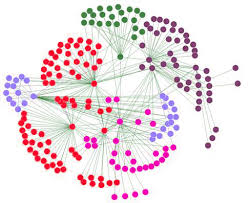
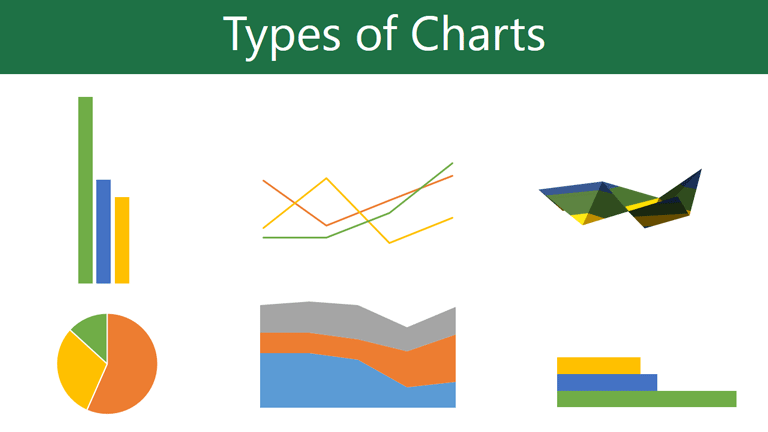

Business Intelligence

Making decisions in business using data occurs every minute at all levels of an organisation. Decisions on performance, marketing, sales, production, logistics, finance among many other areas. This module introduces you to the area of Business Intelligence (BI).
Organisational Memory

Organisational Memory is the storage of information in such a form that it can be later accessed and used for BI
Enterprise Data Warehouse

An EDW is either a integrated centralised single store of normalised data, a collection of data mart holding dimensional data, or a combination of both.
Data Warehousing
This section covers the extraction transformation and loading process as well as looking at the future of enterprise data warehouses.
Continuous Assessment

You will conduct statistical analysis on a dataset of Airbnb data and create an appropriate dashboard.
Information Integration

Creation of new insights via the integration of structured organisational data with external data, such as web based unstructured data from customer service web sites or vendor data sources
Text Mining Article by SAS

Discovering What You Want: Using Custom Entities in Text Mining
Big Data

Big data refers to voluminous amounts of structured or unstructured data that organizations can potentially mine and analyze for business gains.
Information Insights I

Data Mining definitions, applications in business and non profit, and the Data Mining Process
Information Presentation
�We�re continually using and analysing data to identify how well we are performing against our business objectives and goals�. This section covers Business Performance Management (BPM) and the evolving Business Intelligence tools, from reporting to visualization techniques.
SAS Article about Chart Types

The concept of using pictures to understand data has been around for centuries